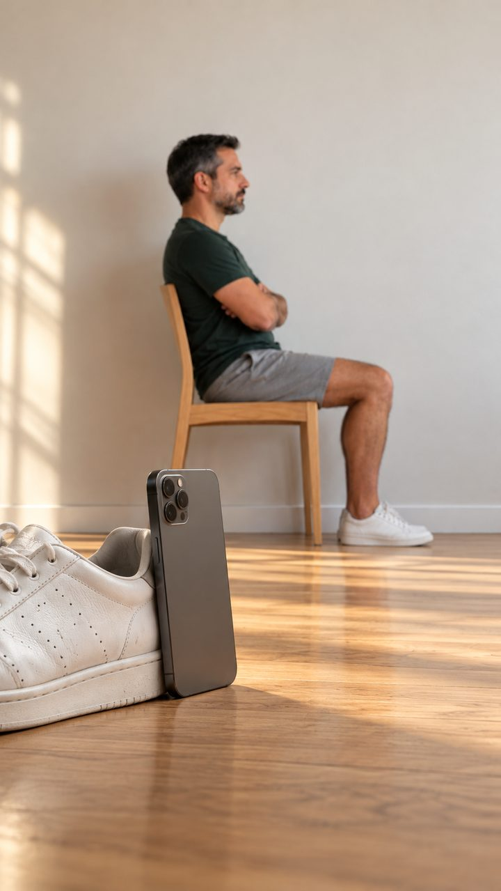

Levante da cadeira 5 vezes na frente da câmera e veja a idade que a sua potência mostra.
1 minutocom a câmera do celular
Sem cadastroo resultado sai na hora
Como posicionar

você de lado · do ombro ao joelho na tela
1Celular em pé, apoiado no chão ou numa mesa baixa, a uns 2 passos. Precisa aparecer do ombro ao joelho.
2Sente na cadeira, de lado para o celular, braços cruzados na frente do peito.
3Levante e sente 5 vezes, o mais rápido que conseguir. A voz te guia.
Não faça se tiver dor no peito, tontura, problema no joelho ou no quadril, ou uma queda recente. Tenha alguém por perto.
Sobre você
Role para escolher. Nada disso sai do seu celular.
Abrindo a câmera…
0/50,0 s
✅ Seu resultado está pronto
Suas pernas têm a força de quem tem 40 a 50 anos
Seu códigoLV-0000
Seu código guarda seu resultado para o Dr. Lucca ver.
🔒 sua foto não aparece
Agora a pele: 30 segundos
Uma selfie e você vê a idade que a sua pele aparenta.
🔒 30 segundos · sua foto não aparece
Quantos anos a sua pele aparenta?
Uma selfie, de frente pra luz. Sua foto não aparece aqui e seus olhos vão cobertos.
30 suma selfie e pronto
0 fotosguardadas pela Livowa
Como funciona
A câmera acha o seu rosto e tira a foto sozinha. Você vê só um desenho, nunca a foto.
Ainda no seu celular, a gente recorta só o rosto (sai cabelo, orelhas, fundo e roupa), apaga os dados do arquivo, como local e aparelho, e cobre os olhos com uma tarja preta.
Só essa imagem vai para o Gemini, do Google (servidores do Google, que podem ficar fora do Brasil). Na versão paga, o Google não usa a imagem para treinar a IA.
Ela serve só para esta análise. A Livowa não guarda a foto nem o resultado com o seu nome.
É uma estimativa estética, não é exame nem diagnóstico. Rosto é dado sensível pela LGPD (art. 11): você pode desistir a qualquer momento.
Abrindo a câmera…
💡 luz de frente👓 sem óculos💇 testa livre📱 bem perto
✅ Foto tirada · ela não aparece aqui
É isto que vai para a análise
🔬
Lendo a sua pele…
Olhando linhas, manchas e textura
ANALISANDO0%
📸
Essa foto não deu para ler
🔒 Sua foto já foi descartada
Sua pele aparenta ter40 a 46 anos
Pernas e pele
🦵 pernas de—
🧴 pele de—
O que a foto mostra
Seu códigoLV-0000
Seu código guarda seu resultado para o Dr. Lucca ver.